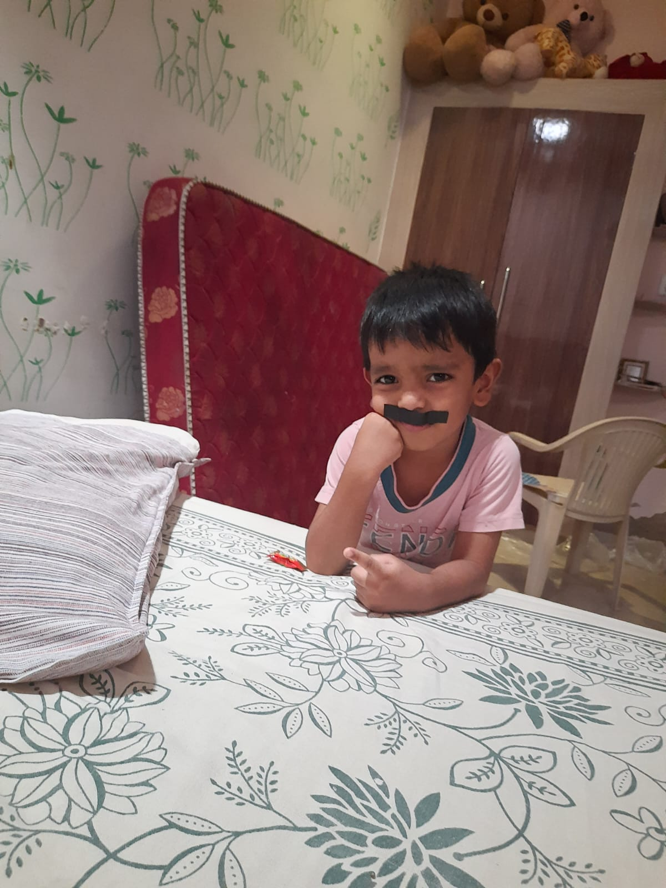

👦 युग : दादी के हृदय का अनमोल आशीर्वाद

एक शब्द में: आशीर्वाद
जन्म और परिवार में आनंद
मेरा पोता युग, जिसे हम सभी प्रेम से “बंधु” कहकर पुकारते हैं, मेरे जीवन की सबसे सुखद, सुंदर और आनंदमयी उपलब्धियों में से एक है। उसका जन्म 24 सितम्बर 2022 को हुआ और उसके आगमन ने हमारे परिवार के जीवन में अपार प्रसन्नता भर दी।
युग मेरे जिगर का टुकड़ा है। मैं प्रभु से सदैव यही प्रार्थना करती हूँ कि उसकी मुस्कान, उसकी निष्कपटता और उसका निर्मल हृदय सदैव सुरक्षित रहे।
दादी की पहली कविता
युग के जन्म से पूर्व ही उसके प्रति मेरे मन में इतना स्नेह और वात्सल्य उमड़ आया था कि मैंने उसके लिए एक कविता लिख दी थी।
कौन हो तुम, आ रहे हो,
सबके मन को भा रहे हो...
यह कविता दादी के मन में उमड़े स्नेह, प्रतीक्षा और आशीर्वाद की पहली अभिव्यक्ति थी।
युग का स्वभाव और संवेदनशीलता
युग की सबसे बड़ी विशेषता उसकी सहजता और संवेदनशीलता है। इतनी छोटी आयु में भी मैंने उसे कभी व्यर्थ की शिकायतें करते, किसी की निंदा करते या क्रोध में प्रतिक्रिया देते नहीं देखा।
यदि परिवार में कोई किसी से नाराज़ हो जाए, तो वह अपने बालसुलभ तर्कों से परिस्थिति को सहज बनाने का प्रयास करता है। वह अपनी मासूम बातों से सबके चेहरे पर मुस्कान ला देता है।
उसकी बातें सुनकर कई बार मुझे आश्चर्य होता है कि इतनी छोटी आयु में उसके भीतर इतनी समझ और संवेदनशीलता कैसे आ गई। मुझे उसमें अपने पिताजी और अपने पुत्र प्रभात दोनों की झलक दिखाई देती है।
विद्यालय और पारिवारिक गर्व
युग वर्तमान में उसी विद्यालय में अध्ययन कर रहा है जहाँ कभी उसके पिताजी प्रभात पढ़ा करते थे। यह बात मेरे लिए विशेष गर्व और आनंद का विषय है।
जब मैं उसे उसी परंपरा को आगे बढ़ाते हुए देखती हूँ, तो मेरा हृदय प्रसन्नता से भर उठता है।
दादी का आशीर्वाद
मैं स्वयं को सौभाग्यशाली मानती हूँ कि मुझे युग जैसा स्नेही, संस्कारी और प्रेमपूर्ण पोता प्राप्त हुआ है। मेरी कामना है कि वह युगों-युगों तक अपने माता-पिता, दादा-दादी और पूरे परिवार का नाम रोशन करे।
तुम्हारे लिए मेरी अनंत शुभकामनाएँ, आशीर्वाद और स्नेह सदैव बने रहेंगे। तुम जीवन के प्रत्येक क्षेत्र में सफलता प्राप्त करो, उत्तम मनुष्य बनो और अपने सुंदर व्यक्तित्व से संसार को प्रकाशमान करो।
तुम्हारी दादी,
डॉ. आराधना
📜 युग के लिए लिखी गई कविताएँ
युग के जन्म से पहले और उसके जन्मोत्सव के अवसरों पर दादी डॉ. आराधना ने अपने स्नेह, वात्सल्य, आशीर्वाद और भावनाओं को कविताओं के रूप में व्यक्त किया। ये कविताएँ युग के प्रति दादी के निर्मल प्रेम और शुभकामनाओं की अमूल्य स्मृतियाँ हैं।
कविता 1 : जन्म से पहले की प्रतीक्षा
कौन हो तुम, आ रहे हो,
सबके मन को भा रहे हो।
नन्हे चरणों की आहट लेकर,
जीवन में सुख ला रहे हो।
किस रूप में तुम आओगे,
किस नाम से पुकारे जाओगे।
आने से पहले ही तुमने,
सबके मन को हर्षाया है।
दादी के मन में स्नेह जगाकर,
तुमने जीवन को मुस्काया है।
कविता 2 : जन्मोत्सव की शुभकामनाएँ
24 सितम्बर का दिन है आया,
मन फिर से हर्षाया।
मेरे प्यारे युग का जन्मदिवस है आया,
चाहत यह है — युग युगांतर तक रहे तुम्हारी माया।
दादा-दादी के अरमानों की तुम हो हर्षित छाया,
माँ-पिता के घर खुशियों का तुम हो अद्भुत साया।
हो जीवन समृद्ध तुम्हारा,
आए कभी न तुम पर दुखों की कुटिल छाया।
प्रतिदिन परमात्मा का ध्यान करो तुम,
विश्व में उज्ज्वल हो नाम तुम्हारा।
तुम सबकी आँखों के तारे,
तुम हो हमारे चाँद-सितारे।
कविता 3 : प्रिय बंधु के नाम
तुम नहीं हो तो मेरी प्यारी उँगली सूनी लगती है,
तुम नहीं हो तो मेरे घर का उपवन सूना लगता है।
तुम नहीं हो तो घर की हर वस्तु बिखरी लगती है,
तुम आ जाओ तो सब व्यवस्थित हो जाए।
मेरे मन-आँगन को उपवन कर दो,
अपनी मुस्कान से घर को आनंदित कर दो।
तुम्हारी चंचलता से घर में जीवन आता है,
तुम्हारे आने से हर कोना मुस्काता है।
Love You Bandhu.
कविता 4 : मेरे चाँद-सितारे
चौबीस सितम्बर का दिन सबको प्यारा लगता है,
उसी दिन आया मेरा नन्हा युग राजदुलारा।
क्षण-क्षण बढ़ते देखूँ तुमको,
पल-पल का आनंद उठाऊँ।
कू-कू पुकार-पुकार के,
सबके मन को हरते रहते।
तुम इतने नटखट से बंधु,
सबके मन को हर्षाते।
नाना-नानी के प्यारे सितारे,
मामा की आँखों के तारे।
तुम हो हम सबके प्यारे,
सबसे न्यारे, सबसे दुलारे।
भानु सदृश सदा चमकती रहे तुम्हारी आभा,
यही है दादी का स्नेहाशीष और शुभ आशीर्वाद।
📸 युग की फोटो स्मृतियाँ
इन तस्वीरों में युग की मासूमियत, चंचलता और परिवार के साथ जुड़ी प्यारी स्मृतियाँ संजोई गई हैं। मोबाइल पर तस्वीरों को हल्का swipe करके आगे देखें।
स्मृतियों की यात्रा पूर्ण हुई
युग का व्यक्तित्व डॉ. आराधना के जीवन में दादी के वात्सल्य, आशा और आशीर्वाद का सबसे कोमल अध्याय है।